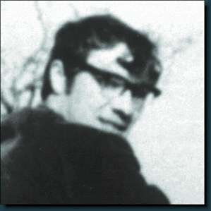

The Published Writings of Robert Cochrane
by Doug and Sandy Kopf

Robert Cochrane
In the early 1960's, an occult periodical made it's debut in England. It's name was 'Pentagram' and it was a publication of the Witchcraft Research Association. The Editor/Publisher, Gerard Noel, held the hope that his Witchcraft Review would encourage dialogue between the varying Traditions of Witchcraft. In the five issues of the magazine (five, thus the name Pentagram) the dialogue became heated, as is so often the case, even today. The hoped for meeting of minds became, instead, a butting of heads. But, never-the-less, some benefit came from the pages of Pentagram. To our good fortune, amongst the regular contributors to Pentagram was a man who used the name Robert Cochrane. The articles written by Cochrane for Pentagram are a valuable part of the legacy he left behind on his death in 1966. (Note: Joseph Wilson first came into contact with Cochrane through Pentagram.)
Readers of Cochrane's articles today must take into consideration several factors, the first being the difference in time, place and mindset. These articles may seem to be critical of certain practices or ideas but, at the time they were written, Political Correctness was a thing of the future. People often said exactly what they thought. Robert Cochrane was an outspoken voice defending his personal views of the Old Religion.
The second thing that must be kept in mind is the fact that these articles were written for the eyes of the general Pagan community. Do not expect to find the ways of the Old Craft laid out freely for all to see. Expect to find some gems, but expect to find some fool's-gold, as well.
Lastly, remember that Cochrane was an inveterate Trickster. He loved nothing more than leading someone down the garden path. Joseph Wilson best describes this:
"In this journey you will be learning to think in the manner of a specialized mystic and learning to understand, to comprehend, in the manner of a poet -- which one might say is also thinking in the manner of a “Witch.” In one of the recent Merlin movies I saw on TV, Arthur complains to Merlin,“You tricked me!” and Merlin responds, “I’m a wizard. That’s my job.” Well, although entertainment features like that are fun, they don’t contain much reality. But that little illustration does contain a gem that warns us to look deeper into things. Meanings in the teachings are not those things you see on the surface, but are those things hidden within -- the Roebuck in the Thicket as Graves said, and in finding them we often get misled, following the Lapwing on a fruitless chase for an illusionary goal."
All that having been said, Cochrane's articles are well worth reading. He taught in riddles and by poetic inference. His words often inspire, even when they confuse. Tori McElroy, who works very closely with Wilson, reads Cochrane using her own methods, which she laughingly calls "The RLD Theorum".
"I use the Roebuck, Lapwing and Dog as aids to puzzle through the various cryptic mysteries presented by Tricksters, such as our own Joe and Robert", says Tori. "To find the Roebuck, you must search the Thicket. To find the Thicket, you must not be misled by the Lapwing, and to approach the Thicket you must Master the Dog. The Roebuck is hidden where the Lapwing's deceptive path originates, just as the true path through the Thicket lies just beyond the Dog."
The following link will take you to three of Cochrane's articles from Pentagram and one from New Dimensions, now republished on Joseph Wilson's Metista Home page (with the gracious permission of Cochrane's widow). Take care not to be misled by the Lapwing and try to avoid the Dog.